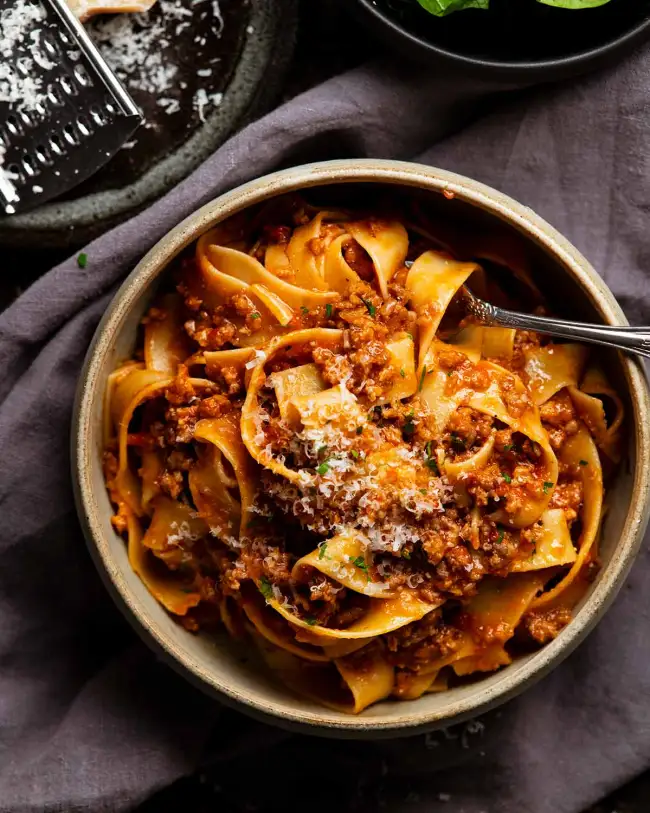

Sausage Rage with Pappardelle Pasta
Take your meat sauce to the next level by using sausages to make an incredible Sausage Ragu! Like Shredded Beef Ragu, cooking this sausage pasta sauce long and slow gives it time to develop deep, complex flavours. Complete your Italian feast with Garlic Bread and a garden salad with Italian Dressing.

Butchers put a lot of time and effort into packing flavour and juiciness into sausages. So I almost see it as my duty to show you how we can get so much more out of sausages than throwing on the barbie* or the usual Bangers and Mash!
Enter – Sausage Ragu. This meat sauce gets a massive flavour boost by using sausage meat rather than plain beef mince, as well as cooking it long and slow which gives the sauce time to develop flavour as well as making the meat melt-in-your-mouth tender.
Ingredients
- Beef + pork – I like to use a combination of both pork and beef sausages for the perfect balance of flavour and soft texture. Beef sausages provide the flavour whereas the pork provides the tenderness. Pork is a much softer meat than beef!
- Sausage quality – Whichever you use, make sure you use good sausages made with more meat and less fillers. Either look at the ingredients list (I aim for 85%+ meat) or look at the sausage – fat specks means better meat, uniform pink colour indicates lots of fillers like the sausages used for fundraiser sausage sizzles (“BBQ sausages”). They can be as low as 55% meat (the rest is flour, maize and non meat things), and often a mix of beef and chicken.
Generally speaking, your friendly local butcher is probably the best source. And he can tell you exactly what goes in his sausages! 🙂
- Sausage not in casings – In the US it is common to find sausage meat sold like mince/ground beef, not inside the sausage casings. Lucky you! For the rest of us, just squeeze the meat out. It is not hard.
Cooking Instructions
- Soffrito – Cook the onion, garlic, celery and carrot in a large heavy based pot over medium heat for 8 minutes, or until the carrot is soft and sweet. Don’t let the vegetables go golden! This step is key for a really beautiful flavour base for the sauce so don’t rush it.
- Cook sausage – Remove the sausage meat from the casings (you literally just squeeze it out) then cook it like you would mince (ground meat). Break it up as you go but don’t get caught up in a frenzy on this step because sausage meat is “stickier” so it won’t crumble as well. We will break it up finer later partway through cooking.
- Ragu sauce – Next, cook the tomato paste for 1 minute to remove the raw sour flavour. Then reduce the wine by half to cook out the winey flavour which only takes a couple of minutes. And finally, add the remaining ingredients: canned tomato, chicken stock, bay leaves, thyme, salt, pepper and chilli flakes if using (I always do).